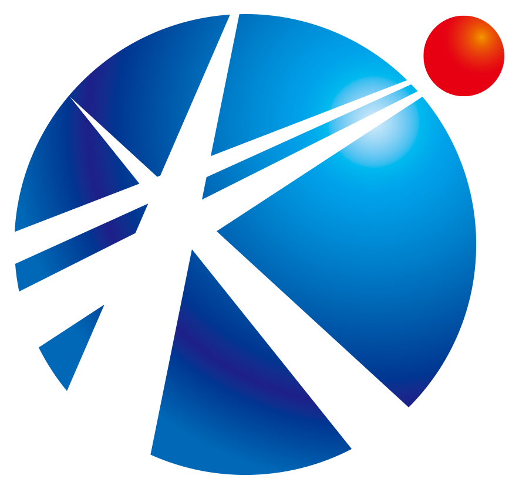

株式会社風見KAZAMI SCAFFOLDING図面を引くところから、安全書類を出すところまで。建物の図面をいただければ、足場の割付図の作成と数量の拾い出しは当社で行います。数量が出ている内訳書なら、単価を入れてご返送するだけでも構いません。着工後はグリーンサイト・Buildee・建設キャリアアップへの登録と提出も当社で進めるため、元請様が代わりに入力する手間は発生しません。
枠組足場・次世代足場・支保工・鉄筋足場から、橋梁の吊り足場まで。マンション・ビル新築を軸に、600棟規模の団地改修や学校・物流施設も手がけてきました。福岡市・糸島を中心に、佐賀県まで出ています。
職人18名・5班／同時5現場まで｜福岡県知事許可（般-4）第110460号｜2004年 個人事業として創業／2017年 法人化｜福岡市・糸島
枠組足場・次世代足場・支保工・鉄筋足場から、橋梁の吊り足場まで。材料を持たない手間請け専門として施工に専念しています。下記はいずれも実際に手がけた現場です。
いちばん多い現場です。低層から高層まで、せり上げながら組み上げます。階数の上限はありません。枠組足場・次世代足場のどちらにも対応します。
市街地の狭い敷地に建つテナントビルから、班に分かれて端から端まで組む大型の物流施設・工場まで。広い現場ほど、人数と段取りが要ります。
特別支援学校、中学校の改修、体育館。600棟規模の団地改修や市営住宅の実績もあります。使いながらの工事にも配慮した仮設計画で。
横断歩道橋・橋りょうの吊り足場、中段足場。道路上や河川上など、条件の難しい現場の実績があります。対応できる会社は多くありません。
上記のほか、解体に伴う足場のみのご依頼にも対応します。同じ型の物件ばかりではないので、「これは組めるか」のご相談から入っていただいて構いません。
※お客様との契約上、物件名・元請様名の公開は控えております。同種の実績の詳細は、お問い合わせ時に個別にご説明します。
「書類が面倒」「急に穴が空いた」「足場図まで描く余裕がない」——元請様が困る場面で、手間を増やさないことを大事にしています。
専任の事務体制があり、グリーンサイト・Buildee・建設キャリアアップシステムに対応済み。作業員名簿・安全書類の提出も自社で進めるため、元請様が代わりに入力する手間が発生しません。紙の現場にも対応します。
自社職人18名で最大5班を編成でき、同時に5現場まで対応できます。「明日から2人足りない」といった急な応援も、状況により対応可能です。まずはお電話ください。
2004年に個人事業として足場工事を始め、2017年に法人化。以来、足場工事だけを続けてきました。手間請けに特化し、マンション・ビル新築の外部足場を軸に、学校・団地改修・橋梁の吊り足場まで手がけています。同じ型の物件だけを繰り返してきたわけではないので、条件の難しい現場ほど声をかけていただいています。若手中心のチームですが、段取りと安全は妥協しません。
建物の図面をいただければ、足場の割付図（施工図）の作成から数量の拾い出しまで当社で行えます。足場図が用意されていない現場でも、当社で作成できますので、そのままお声がけください。数量が出ている内訳書があれば、単価を入れてご返送するだけでも構いません。
さらに、㎡数から必要な人工を逆算して確認したうえでお出ししているので、後から「この単価では組めない」と言い出すことがありません。
本店（福岡市西区）と本社（糸島市）の2拠点から出動しています。福岡県を中心に、九州一円に対応しています。
粕屋町・久山町・須惠町・新宮町・中間市・朝倉市、佐賀県では鳥栖市・基山町などでも施工しています。ここに挙げていない地域でも、規模と工期によってお受けできます。「行けるかどうか」だけでもお電話ください。
「この現場を組めるか」「何人出せるか」の確認だけでも構いません。受付は8:00〜17:00（土日はつながりにくい場合があります）。
数量が出ている場合は、内訳書に単価を入れてご返送します。建物の図面だけの場合も、当社で数量を拾ってお出しします。メール・FAXどちらでも構いません。急ぎの場合はその旨をお伝えください。
金額と、動ける班・日程をあわせてご提示します。材料の納入日と合わせた段取りもご相談ください。
ご発注後、足場の割付図（施工図）を当社で作成します（元請様の仮設計画図に沿う場合はそちらで進めます）。図面ができた時点で数量を再確認し、注文時の想定とずれがあればその場でご相談します。後出しの追加請求を避けるための工程です。
グリーンサイト・Buildee等への登録と書類提出は当社で対応。着工後も日々の報告を欠かしません。
| Name | 株式会社風見 |
|---|---|
| Office | 本店：福岡市西区泉3丁目16-8 本社：福岡県糸島市大門165-13 |
| Founded | 平成16年（2004年）個人事業として創業 平成29年（2017年）株式会社風見へ組織変更 |
| Business | 足場工事（枠組足場・次世代足場・吊り足場）、支保工 ほか仮設工事 |
| Licence | 福岡県知事許可（般-4）第110460号 とび・土工工事業 （有効期間：令和4年4月21日〜令和9年4月20日） |
| Insurance | 賠償責任保険／労災上乗せ保険 加入 |
| Staff | 足場職人 18名（5班編成／同時5現場対応） |
| System | グリーンサイト・Buildee・建設キャリアアップシステム 対応 |
| Tel | 092-332-3375 受付 8:00〜17:00（土日はつながりにくい場合があります） |
「組めるか知りたい」「何人出せるか聞きたい」だけでも構いません。
足場の施工図・数量の拾い出しも、当社で承ります。
※職人としてのご応募は 採用情報ページ をご覧ください。